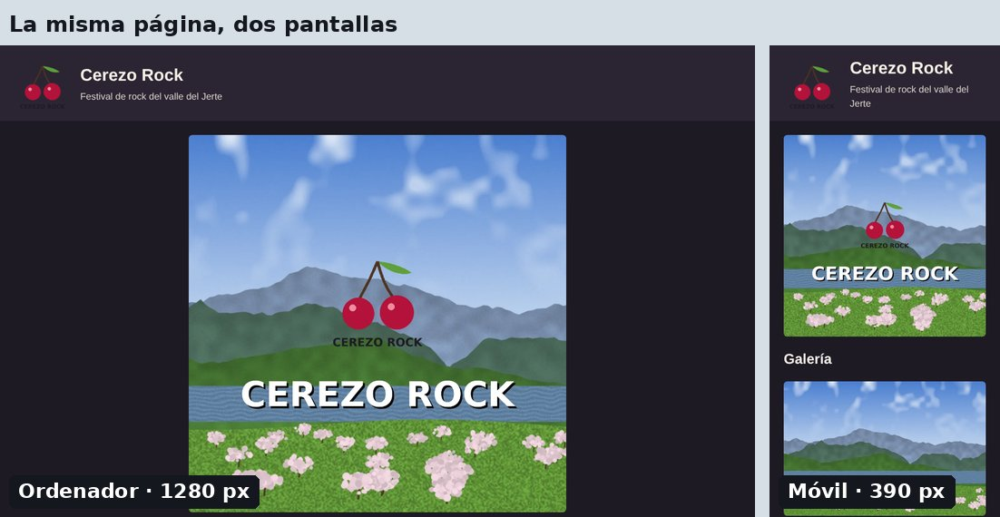
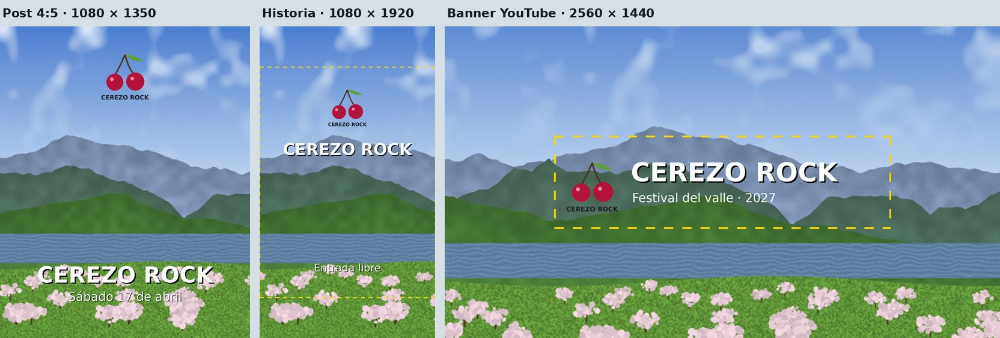
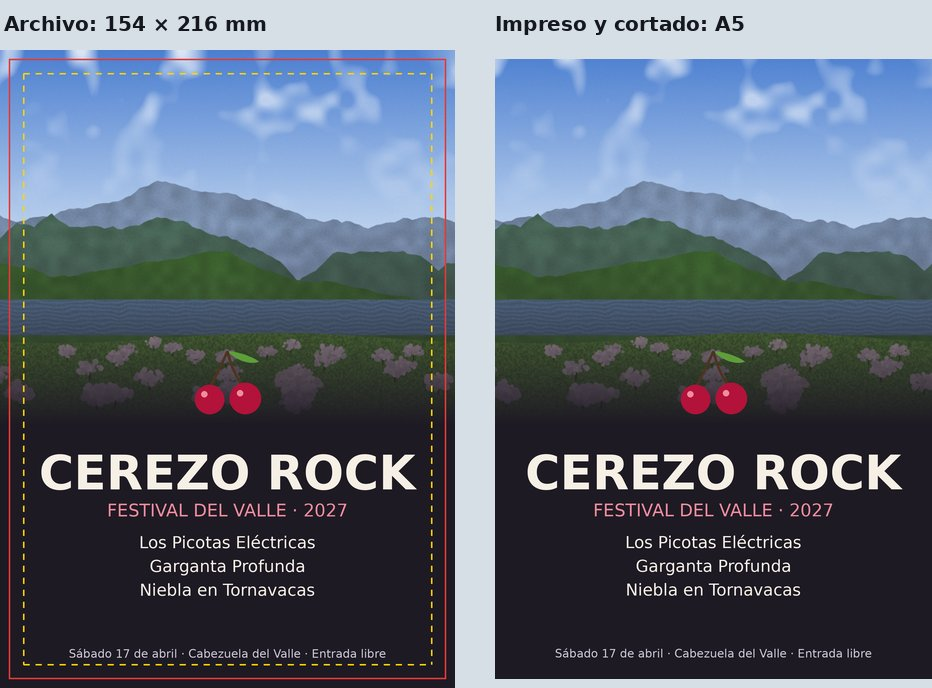

0223 · Aplicaciones ofimáticas · Tema 3 (6 de 6)
Tema 3.6 — Publicar en web, redes e impresión
Qué se evalúa · RA y criterios
Resultado de aprendizaje
RA5. Manipula imágenes digitales analizando las posibilidades de distintos programas y aplicando técnicas de captura y edición básicas.
Criterio de evaluación que trabaja este subtema:
- f) Se ha publicado imágenes en diferentes medios.
Material para practicar
Usarás lo que exportaste en el 3.5 (o el material de entonces: la foto del paisaje y el logotipo con transparencia) y esta plantilla:


- Plantilla de página web
(ZIP, 6 KB): una página con cabecera y logotipo, imagen principal, galería
de tres imágenes y créditos. Cada hueco dice qué imagen va y de qué tamaño.
Descomprímela en
Tema3_Proyecto/web.
Calculadora de tamaños para redes e impresión (laboratorio, apartado 9)
1. Cada medio pide una cosa
| Web | Redes sociales | Impresión | |
|---|---|---|---|
| Se mide en | Píxeles | Píxeles, con una proporción fija | Centímetros o milímetros y ppp |
| Resolución | Los píxeles del hueco (los ppp dan igual) | Los que pide cada red | 300 ppp (un póster que se ve de lejos, 150) |
| Color | RGB | RGB | La imprenta trabaja en CMYK (tintas) |
| Formato | WebP, JPG, PNG, SVG | JPG o PNG | PDF o TIFF |
| Lo que manda | El peso: que cargue rápido | Que se vea bien en un móvil | La calidad: el peso da igual |
| Cuidado con | El texto alternativo y el tamaño | Los recortes y la zona segura | El sangrado y los márgenes |
2. Publicar en una página web
Una página web es un archivo de texto (index.html) que dice al
navegador qué imágenes cargar y dónde. Cada imagen se pone con una etiqueta
<img>:
| Atributo | Para qué sirve |
|---|---|
src | La ruta del archivo. Por eso los nombres sin espacios ni tildes del 3.5: Foto Final.JPG y foto final.jpg no son el mismo archivo en un servidor. |
alt | El texto alternativo: lo lee en voz alta el lector de pantalla de una persona ciega, y aparece si la imagen no carga. Describe lo que se ve y lo que importa («Portada del single…»), no «imagen1». |
width y height | Los píxeles de la imagen. El navegador reserva el hueco antes de descargarla y la página no da saltos mientras carga. |
loading="lazy" | Carga diferida: la imagen no se descarga hasta que te acercas a ella. Úsalo en todas menos en las de arriba del todo. |
Cómo se rellena la plantilla
- Copia tus imágenes exportadas en la carpeta
imgde la plantilla. - Abre
index.htmlcon el Bloc de notas (clic derecho > Abrir con). Los comentarios<!-- … -->te dicen qué cambiar en cada sitio. - En cada
<img>cambiasrc,alt,widthyheight. Cambia también el nombre del proyecto y los créditos. - Sustituye
favicon.icopor el tuyo del 3.5, con el mismo nombre. - Guarda y abre
index.htmlcon doble clic. Si una imagen no sale, revisa letra a letra el nombre ensrc.
Comprobar cómo se ve y cuánto pesa
- Peso: pulsa F12, pestaña Red y recarga con F5. Abajo sale lo que se ha transferido en total. Una página así debería pesar menos de 1 MB; si una imagen pesa más de 200 KB, vuelve al 3.5.
- Móvil: con F12 abierto, pulsa Ctrl+Mayús+M (Chrome, Edge y Firefox) y elige un móvil o escribe 390 de ancho. La plantilla coloca la galería en una sola columna.
Para que la vea todo el mundo, la carpeta se sube a un servidor web. Esta misma web del módulo es una carpeta de archivos como la tuya, publicada con GitHub Pages. En este subtema no hace falta subirla: basta con que funcione en tu ordenador.

3. Redes sociales
Cada red tiene sus tamaños, y si subes otra proporción, la recorta ella (normalmente por donde no quieres). Estos son los recomendados en noviembre de 2026; cambian de vez en cuando, así que antes de un trabajo real mira la ayuda de cada red.
| Red | Pieza | Píxeles | Proporción | Ojo con |
|---|---|---|---|---|
| Publicación | 1080 × 1080 · 1080 × 1350 · 1080 × 1440 | 1:1 · 4:5 · 3:4 | La cuadrícula del perfil enseña las publicaciones en 3:4: una cuadrada pierde los lados. | |
| Historia o reel | 1080 × 1920 | 9:16 | Unos 250 px arriba y abajo los tapan el nombre y los botones. | |
| Foto de perfil | 320 × 320 | 1:1 | Se ve en un círculo: las esquinas se pierden. | |
| YouTube | Miniatura | 1280 × 720 | 16:9 | Máximo 2 MB. Abajo a la derecha va la duración del vídeo. |
| Banner del canal | 2560 × 1440 | 16:9 | Solo la franja central de 1546 × 423 se ve en todos los aparatos. Mínimo 2048 × 1152, máximo 6 MB. | |
| X | Cabecera del perfil | 1500 × 500 | 3:1 | Abajo a la izquierda la tapa la foto de perfil. |
| Imagen de una publicación | 1200 × 675 | 16:9 | Hasta 5 MB. |
La zona segura
Es la parte de la imagen que se ve siempre, en cualquier pantalla y con cualquier botón encima. El nombre, la fecha y el logotipo van dentro; fuera, solo fondo. En GIMP se marca con guías:
Imagen > Guías > Guía nueva…: elige la dirección (horizontal o vertical) y escribe la posición en píxeles. Repite para cada borde de la zona segura.- Activa
Vista > Ajustar a las guías: las capas y las selecciones se pegan a ellas al acercarlas. - Las guías no se exportan: son solo una ayuda en pantalla.
Por ejemplo, en una historia (1080 × 1920) pon guías horizontales en 250 y 1670; en un banner de YouTube (2560 × 1440), verticales en 507 y 2053 y horizontales en 508 y 931.

Antes de subir
- Las redes recomprimen lo que subes. Sube el tamaño exacto en JPG de calidad alta (85–90): si subes algo ya muy comprimido, se comprime dos veces y se nota.
- Quita los metadatos (subtema 3.2): algunas redes los borran, pero no todas, y una foto hecha en casa lleva tu ubicación.
- Escribe el texto alternativo: Instagram y X tienen la opción al publicar (en Instagram, en Configuración avanzada; en X, Añadir descripción).
Prueba tu imagen en cada destino con la calculadora del laboratorio
4. Imprimir y enviar a imprenta
Resolución y color
- 300 ppp al tamaño final (subtema 3.1): un A5 son 1748 × 2480 px; un A4, 2480 × 3508; un A3, 3508 × 4961.
- La pantalla da color con luz (RGB) y la imprenta con tintas (CMYK). Los colores muy saturados de pantalla, como un verde o un azul eléctrico, salen más apagados en papel. En GIMP 3 puedes simularlo con la prueba de color (menú
Vista > Gestión del color). Pregunta a la imprenta: muchas aceptan el PDF en RGB y lo convierten ellas.
Sangrado y zona segura
La imprenta imprime en un papel más grande y luego corta. La cuchilla nunca cae exactamente en la línea: si el fondo acaba justo en el borde, puede quedar un filo blanco. Por eso:
- Sangrado: el fondo se alarga 3 mm por cada lado, más allá del corte. Un A5 (148 × 210 mm) con sangrado mide 154 × 216 mm: a 300 ppp, 1819 × 2551 px.
- Zona segura: los textos y el logotipo, a 5 mm por dentro del corte como mínimo (8 mm desde el borde del archivo), por si el corte se desvía hacia dentro.
| Papel | Con sangrado (mm) | Archivo a 300 ppp | Guías de corte (px desde cada borde) | Guías de zona segura |
|---|---|---|---|---|
| A5 · 148 × 210 | 154 × 216 | 1819 × 2551 | 35 | 94 |
| A4 · 210 × 297 | 216 × 303 | 2551 × 3579 | 35 | 94 |
| A3 · 297 × 420 | 303 × 426 | 3579 × 5031 | 35 | 94 |
En GIMP
Archivo > Nueva…: escribe el tamaño en píxeles de la tabla y, en Opciones avanzadas, resolución X e Y de 300.- Pon las guías de corte (35 px desde cada borde) y las de zona segura (94 px). Para el borde derecho y el de abajo, resta: en un A5, verticales en 35, 94, 1725 y 1784, y horizontales en 35, 94, 2457 y 2516.
- Diseña: el fondo y las fotos llegan hasta el borde del archivo; los textos, dentro de la zona segura.
- Guarda el XCF y exporta con
Archivo > Exportar como…y extensión.pdf. Ese PDF es el que va a la imprenta.

En la impresora de casa o del aula
Las impresoras de oficina no imprimen hasta el borde: dejan unos milímetros
en blanco, por eso no tiene sentido el sangrado. En Archivo >
Imprimir…, en la pestaña de la imagen, comprueba que el tamaño sea el
real (14,8 × 21 cm para un A5) y no Ajustar a la página. Imprimir una
prueba a tamaño real es la mejor forma de ver si el texto se lee.
5. Derechos y licencias
Una foto, un dibujo o un logotipo tienen derechos de autor desde que se crean, sin registrar nada ni poner ©. Que una imagen esté en Internet no significa que la puedas usar: si no dice lo contrario, necesitas permiso de su autor.
Licencias Creative Commons
Son permisos que el autor da por adelantado. Todas piden citar al autor (BY), salvo CC0; las otras letras añaden condiciones:
Ejemplo: una foto CC BY-NC-ND se puede poner en el blog del instituto citando al autor, pero no se le puede poner texto encima (ND) ni usarla en el anuncio de unas camisetas (NC).
Dónde encontrar imágenes que puedes usar
- Openverse (openverse.org) y Wikimedia Commons: buscadores de imágenes con licencia libre. Cada imagen dice su licencia; filtra por las que permiten modificar.
- Unsplash y Pexels: fotos con su propia licencia, muy permisiva (se pueden usar y modificar gratis, también en proyectos comerciales), aunque no dejan vender la foto tal cual. Citar no es obligatorio, pero es buena costumbre.
- En Google Imágenes:
Herramientas > Derechos de uso > Licencias Creative Commons. Comprueba siempre la licencia en la página original.
Cómo se cita
Con cuatro datos: título, autor, licencia y fuente (con enlace). Por ejemplo, inventado:
Va en los créditos de la web (la plantilla tiene un hueco), en el texto de la publicación en redes o en letra pequeña en el cartel. Si has modificado la imagen, añade «recortada y retocada por …».
Personas en las fotos
Además del autor de la foto, cuenta el derecho a la propia imagen de quien aparece: para publicar una foto en la que se reconoce a alguien necesitas su permiso, y si es menor de 14 años, el de su familia. En el instituto, nunca publiques fotos de compañeros sin preguntarles.
Firmar tus imágenes
- Metadatos de autor: en GIMP,
Imagen > Metadatos > Editar metadatos, y rellena el autor y el aviso de copyright (por ejemplo,© 2026 Ana Pérez · CC BY-NC 4.0). Al exportar, deja marcado XMP para que se guarden, y desmarca Exif si la foto tenía ubicación. - Marca de agua: tu nombre o tu logotipo, pequeño y semitransparente (opacidad de la capa al 30–50 %), en una esquina. No impide que copien la imagen, pero se sabe de quién es.
6. Prácticas del subtema
Acreditan el criterio f (publicar imágenes en diferentes medios). Entrega los archivos que se piden y una memoria en PDF con las capturas.
- P3.6.1 · Una página web con tus imágenes.
Rellena la plantilla con las exportaciones de la P3.5.3 y la P3.5.4 (el
logotipo en PNG, el icono, la foto para la web y la miniatura). En el hueco
de la portada pon una foto con licencia CC BY o CC0 que encuentres en
Openverse o Wikimedia Commons, preparada para la web (1200 px como mucho,
WebP). Cada imagen con su
alt, suwidthy suheight. En los créditos, cita la foto con título, autor, licencia y fuente. Comprueba el peso total con F12 > Red y captura la página en el ordenador y en modo móvil. - P3.6.2 · Una foto, tres redes. Con
exportar-foto.jpgyexportar-logo-transparente.png, prepara una publicación de Instagram de 1080 × 1350, una historia de 1080 × 1920 y un banner de YouTube de 2560 × 1440. Las tres con el logotipo, el texto «CEREZO ROCK» y otra línea (la fecha, «Entrada libre»…). Pon las guías de la zona segura antes de colocar el texto. Exporta en JPG de calidad 85 y comprueba cada una cargándola en la calculadora del laboratorio. - P3.6.3 · El flyer para la imprenta. Haz un flyer A5 con sangrado (1819 × 2551 px a 300 ppp) con la foto, el logotipo y estos textos: CEREZO ROCK, Festival del valle · 2027, tres grupos inventados y Sábado 17 de abril · Cabezuela del Valle · Entrada libre. Guías de corte y de zona segura; el fondo hasta el borde y los textos dentro. Rellena los metadatos de autor y exporta en PDF. Exporta también una versión de 1080 px de ancho en JPG para anunciarlo en redes. Si puedes, imprime una prueba a tamaño real.
Qué entregas de las prácticas del 3.6
Las tres prácticas van juntas: la carpeta de la web, las piezas para redes, el flyer y una memoria con las capturas.
Sube a Moodle <usuario>_p36.zip. En su raíz:
| Qué es | Nombre dentro del ZIP | Parte |
|---|---|---|
| Memoria con capturas | <usuario>_p36.pdf | Todas |
La carpeta de la web entera (index.html, estilo.css, favicon.ico e img), sin renombrar nada dentro | <usuario>_a01/ (carpeta) | P3.6.1 |
| Publicación, historia y banner | <usuario>_a02_1.jpg · <usuario>_a02_2.jpg · <usuario>_a02_3.jpg | P3.6.2 |
| Flyer para la imprenta | <usuario>_a03.pdf | P3.6.3 |
| Flyer para redes | <usuario>_a03.jpg | P3.6.3 |
| El archivo de trabajo del flyer | <usuario>_a03.xcf | P3.6.3 |
La carpeta de la web es la excepción a la norma de nombres:
se cambia el nombre de la carpeta, pero lo de dentro se queda como está, o la
página dejaría de encontrar sus imágenes. La memoria cumple las normas del
módulo: portada, índice con hiperenlaces, páginas numeradas, enunciado en
negrita y respuesta en normal, Figura N: … en cada imagen, sin
faltas y capturas de pantalla completa con la fecha y el archivo abierto.
Capturas que no pueden faltar en la memoria
- P3.6.1: la página en el navegador a pantalla completa, la misma en modo móvil y la pestaña Red con el peso total.
- P3.6.1: la página de la foto en Openverse o Wikimedia Commons donde se ve su licencia.
- P3.6.2: la historia y el banner en GIMP con las guías de la zona segura visibles.
- P3.6.3: el flyer en GIMP con las guías, el cuadro Editar metadatos relleno y el PDF abierto en el navegador.
Comprueba antes de entregar
- La web se abre con doble clic en
index.htmly se ven todas las imágenes y el icono en la pestaña. - Ninguna imagen de la web tiene
altvacío ni «imagen»; loswidthyheightson los píxeles reales. - La página pesa menos de 1 MB en la pestaña Red, y los créditos citan la foto con título, autor, licencia y fuente.
- Las tres piezas de la P3.6.2 tienen exactamente 1080 × 1350, 1080 × 1920 y 2560 × 1440 px, y todo el texto queda dentro de la zona segura de la calculadora.
- El PDF del flyer, abierto en el navegador, mide 154 × 216 mm (en Propiedades del documento), el fondo llega al borde y ningún texto está a menos de 94 px del borde.
- La versión del flyer para redes mide 1080 px de ancho y pesa menos de 500 KB.
Cómo debe quedar
Fallo más común: hacer el flyer de 1748 × 2480 (el A5 justo, sin sangrado) o poner el texto pegado al borde. En la imprenta sale con un filo blanco o con las letras cortadas.
7. Comprueba lo que has entendido
Ocho preguntas. No cuenta para la nota: es para que veas si puedes seguir.